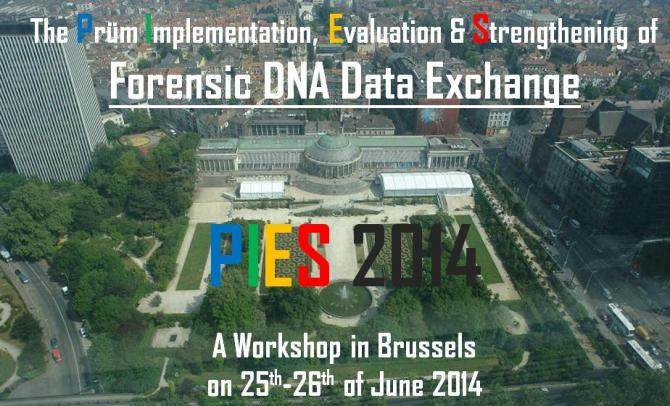

BACKGROUND
Forensic DNA databases are potential sources of high-quality cross-national intelligence for law enforcement and judicial purposes, through the inference that two matching genetic profiles found in two different locations originate from the same person. However, despite the 2005 Prüm Treaty aimed at improving the automatic exchange of forensically-relevant data (such as genetic profiles), the 2008 European Union legislation requiring all Member States to participate in this exchange framework, and the successful participation of numerous countries, full implementation is proving more difficult than originally anticipated.
WHAT WE WILL DO
During this two-day workshop, academics and representatives of law-enforcement and judicial agencies from various corners of Europe will gather in Brussels to share their views on the potentials of Prüm for exchanging forensic DNA data between countries, the obstacles to this exchange and the solutions which facilitate it. On the first day, a series of short presentations will illustrate results from Prüm. Ample opportunities for discussion will be provided during the breaks, lunch and the diner at the Museum of Natural History. On the second day, short presentations and a round table will illustrate the obstacles to Prüm and solutions foreseen by different institutions. The PIES project is a European Commission co-funded project that aspires to stimulate the exchange of forensic DNA data under Prüm through several activities. This workshop is one of them.
PRACTICAL INFORMATION
Venue : Pacheco Center. Boulevard de Pachéco 13 Pachecolaan, 1000 Brussels
Participants : Participation is restricted to academics and representatives of law-enforcement or judicial agencies.
AGENDA - Wednesday, 25th of June
|
1 |
9:00 – 9:30 |
REGISTRATION |
|
2 |
9:30 – 9:35 |
Welcome! |
|
3 |
9:35 – 9:55 |
A few words on the PIES project |
|
4 |
9:55 – 10:15 |
Prüm and the Netherlands: an overview of the results |
|
5 |
10:15 – 10:45 |
An evaluation of the operational benefits of transnational DNA profile comparison in the Netherlands |
|
6 |
10:45 – 11:15 |
COFFEE BREAK 1 |
|
7 |
11:15 – 11:45 |
Operational and strategic perspectives on the French DNA database |
|
8 |
11:45 – 12:15 |
A DNA cartography of the Prüm hits between the Netherlands and the EU |
|
9 |
12:15 – 13:45 |
LUNCH & GROUP PHOTO |
|
10 |
13:45 – 14:15 |
A study of the false positives in the French DNA database and simulations |
|
11 |
14:15 – 14:45 |
A statistical analysis of the Belgian DNA database |
|
12 |
14:45 – 15:05 |
Introduction to the Be-Gen project: Understanding the operational, strategic, and political implications of the National Genetic Database |
|
13 |
15:05 – 15:35 |
COFFEE BREAK 2 |
|
14 |
15:35 – 16:05 |
Inter EU migration: Spatial diversity and crime impact across English Police Forces |
|
15 |
16:05 – 16:35 |
A picture of crime and its relation to EU migration |
|
16 |
16:35 – 17:05 |
COFFEE BREAK 3 |
|
17 |
17:05 – 17:25 |
Context: Development of further questions and interest points |
|
18 |
17:25 – 17:55 |
Conclusion of the day |
|
19 |
17:55 – 18:55 |
BREAK |
|
20 |
18:55 – 19:25 |
TRAVEL TO THE MUSEUM |
|
21 |
19:25 – 22:00 |
DINNER AT THE MUSEUM OF NATURAL SCIENCES |
AGENDA - Thursday, 26th of June
|
22 |
8:20 – 8:30 |
REGISTRATION |
|
23 |
8:30 – 8:35 |
Introduction |
|
24 |
8:35 – 8:55 |
Prüm and the European Information Exchange Model (EIXM) |
|
25 |
8:55 – 9:15 |
Europol products and processes (File analysis, SIENA & UMF2) and operational work |
|
26 |
9:15 – 9:35 |
The role of Eurojust in the judicial follow-up of the Prüm hits |
|
27 |
9:35 – 9:55 |
Assessing forensic DNA reports in courts. A cross-national comparative view |
|
28 |
9:55 – 10:25 |
COFFEE BREAK 1 |
|
29 |
10:25 – 10:40 |
The long and rocky road to Prüm – An update on the Belgian situation |
|
30 |
10:40 – 10:55 |
The Belgian National Unit responsible for managing the Prüm Hit follow-up process |
|
31 |
10:55 – 11:15 |
A survey of the Follow-up Process after a Prüm DNA hit |
|
32 |
11:15 – 11:30 |
Networking the exchange of forensic DNA data in Spain: the NETDNAMATCH project |
|
33 |
11:30 – 12:00 |
Round table: best practices, models, and future action for Prüm Forensic DNA data exchanges |
|
34 |
12:00 – 13:00 |
LUNCH & GROUP PHOTO |
|
35 |
13:00 – 13:20 |
Prὒm, Forensic DNA and Public Policy |
|
36 |
13:20 – 13:40 |
The Swiss situation concerning the comparison of DNA data within Prüm and other frameworks |
|
37 |
13:40 – 13:55 |
The EMPACT operation and the Survey on forensic intelligence |
|
38 |
13:55 – 14:10 |
SOCTA & Integrating the PIES results in the EU Policy Cycle |
|
39 |
14:10 – 14:40 |
COFFEE BREAK 2 |
|
40 |
14:40 – 15:00 |
Using DNA traces to study offending behavior |
|
41 |
15:00 – 15:20 |
The UK Prüm Fingerprint Evaluation (UKPFE) Project |
|
42 |
15:20 – 15:50 |
Conclusions of the workshop |
|
43 |
|
END OF THE WORKSHOP |